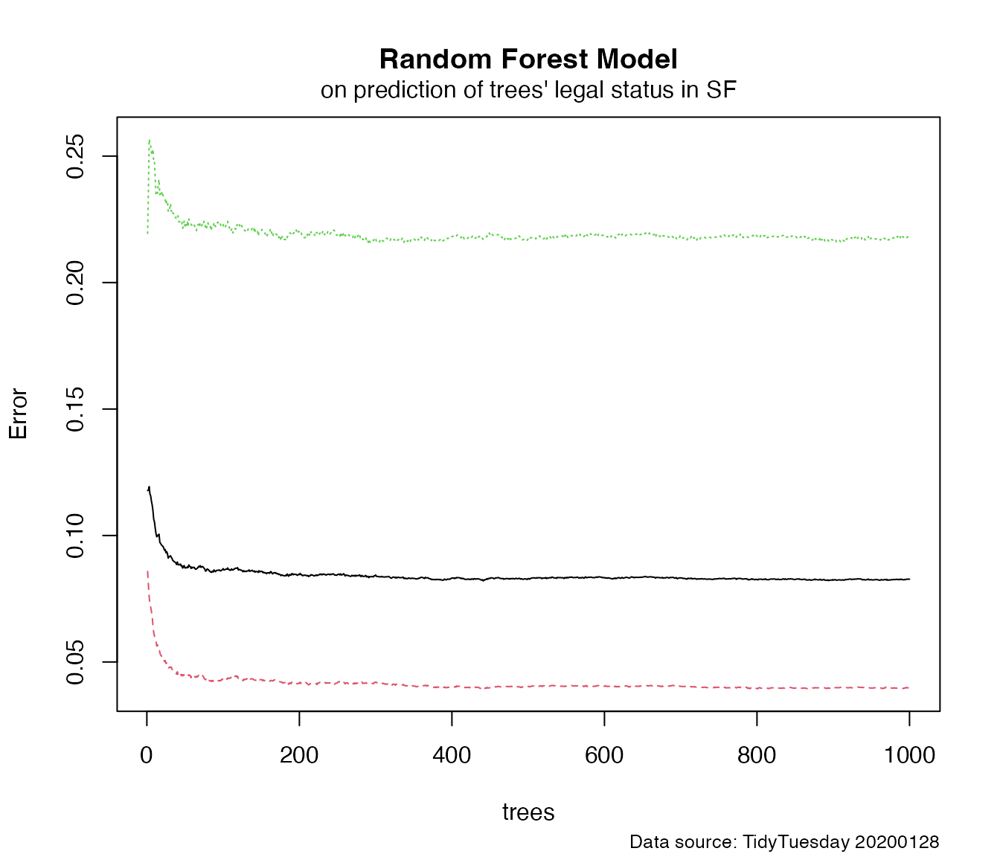

Example_Analysis
Example_Analysis.RmdRead package
library(randomForest)
#> randomForest 4.7-1.1
#> Type rfNews() to see new features/changes/bug fixes.
library(tidyverse)
#> ── Attaching packages
#> ───────────────────────────────────────
#> tidyverse 1.3.2 ──
#> ✔ ggplot2 3.4.4 ✔ purrr 1.0.2
#> ✔ tibble 3.2.1 ✔ dplyr 1.1.4
#> ✔ tidyr 1.3.0 ✔ stringr 1.5.1
#> ✔ readr 2.1.3 ✔ forcats 0.5.2
#> ── Conflicts ────────────────────────────────────────── tidyverse_conflicts() ──
#> ✖ dplyr::combine() masks randomForest::combine()
#> ✖ dplyr::filter() masks stats::filter()
#> ✖ dplyr::lag() masks stats::lag()
#> ✖ ggplot2::margin() masks randomForest::margin()
library(ggplot2)
library(dplyr)
library(rsample)
library(here)
#> here() starts at /Users/christil/Desktop/grad-epi/2023term2/progamming paradigm workflow/project3
library(purrr)Dataset
Question aim: To predict which trees are maintained by the San Francisco Department of Public Works (DPW) by using random forest.
Data: TidyTuesday 2020/01/28 San Francisco Tree. This dataset explores the difference species of trees and the legal status, site, address, etc. of them in San Francisco. The data is gathered by San Francisco Department of Legal Work.
Data dictionary: https://github.com/rfordatascience/tidytuesday/tree/master/data/2020/2020-01-28#data-dictionary
Data: https://github.com/rfordatascience/tidytuesday/blob/master/data/2020/2020-01-28/sf_trees.csv
Load Data
#tuesdata <- tidytuesdayR::tt_load("2020-01-28")
#sf_trees <- tuesdata$sf_trees
if (!file.exists(here("data", "tuesdata_sf_trees.RDS"))) {
tuesdata <- tidytuesdayR::tt_load("2020-01-28")
sf_trees <- tuesdata$sf_trees
# save the files to RDS objects
saveRDS(tuesdata$sf_trees, file = here("data", "tuesdata_sf_trees.RDS"))
}
#load the data
sf_trees <- readRDS(here("data", "tuesdata_sf_trees.RDS"))
as_tibble(sf_trees)
#> # A tibble: 192,987 × 12
#> tree_id legal_status species address site_order site_info caretaker
#> <dbl> <chr> <chr> <chr> <dbl> <chr> <chr>
#> 1 53719 Permitted Site Tree(s) :: 2963 W… 1 Sidewalk… Private
#> 2 30313 Permitted Site Tree(s) :: 501 Ar… 3 Sidewalk… Private
#> 3 30312 Permitted Site Tree(s) :: 501 Ar… 2 Sidewalk… Private
#> 4 30314 DPW Maintained Pittosporum un… 501 Ar… 1 Sidewalk… Private
#> 5 30315 Permitted Site Acacia melanox… 1190 S… 5 Sidewalk… Private
#> 6 30316 Permitted Site Acacia melanox… 1190 S… 6 Sidewalk… Private
#> 7 48435 Permitted Site Tree(s) :: 1190 S… 4 Sidewalk… Private
#> 8 30319 Permitted Site Magnolia grand… 867 25… 2 Sidewalk… Private
#> 9 30318 Permitted Site Magnolia grand… 867 25… 1 Sidewalk… Private
#> 10 30320 Permitted Site Corymbia ficif… 867 25… 3 Sidewalk… Private
#> # ℹ 192,977 more rows
#> # ℹ 5 more variables: date <date>, dbh <dbl>, plot_size <chr>, latitude <dbl>,
#> # longitude <dbl>Exploratory Data Analysis
trees_df <- sf_trees %>%
mutate(
legal_status = case_when(
legal_status == "DPW Maintained" ~ legal_status,
TRUE ~ "Other"),plot_size = parse_number(plot_size)) %>%
select(-address) %>%
select(-species) %>%
na.omit() %>%
mutate_if(is.character, factor)
trees_df %>%
select_if(is.numeric) %>%
map(~summary(.))
#> $tree_id
#> Min. 1st Qu. Median Mean 3rd Qu. Max.
#> 2 22484 61928 74146 97392 261546
#>
#> $site_order
#> Min. 1st Qu. Median Mean 3rd Qu. Max.
#> 1.000 1.000 1.000 3.154 3.000 117.000
#>
#> $dbh
#> Min. 1st Qu. Median Mean 3rd Qu. Max.
#> 0.000 3.000 3.000 5.917 6.000 100.000
#>
#> $plot_size
#> Min. 1st Qu. Median Mean 3rd Qu. Max.
#> 0.00 3.00 3.00 3.29 3.00 100.00
#>
#> $latitude
#> Min. 1st Qu. Median Mean 3rd Qu. Max.
#> 37.71 37.74 37.76 37.76 37.78 37.81
#>
#> $longitude
#> Min. 1st Qu. Median Mean 3rd Qu. Max.
#> -122.5 -122.5 -122.4 -122.4 -122.4 -122.4
map_chr(.x = trees_df, .f = typeof)
#> tree_id legal_status site_order site_info caretaker date
#> "double" "integer" "double" "integer" "integer" "double"
#> dbh plot_size latitude longitude
#> "double" "double" "double" "double"
trees_df %>%
ggplot(aes(longitude, latitude, color = legal_status)) +
geom_point(size = 0.3, alpha = 0.6) +
labs(
title = 'Distribution of Trees by Legal Status',
subtitle = 'San Francisco Trees',
caption = "Data source: TidyTuesday 20200128",
x = 'Longitude',
y = 'Latitude',
color = 'Legal Status'
) +
theme_minimal(base_size = 12) +
theme(
legend.position = 'right',
plot.title = element_text(face = "bold", hjust = 0.5),
plot.subtitle = element_text(hjust = 0.5)
) +
scale_color_brewer(palette = "Set2")
trees_df %>%
count(legal_status, caretaker) %>%
add_count(caretaker, wt = n, name = "caretaker_count") %>%
filter(caretaker_count > 50) %>%
group_by(legal_status) %>%
mutate(percent_legal = n / sum(n)) %>%
ggplot(aes(percent_legal, caretaker, fill = legal_status)) +
geom_col(position = "dodge") +
labs(
title = "Proportion of Trees by Legal Status and Caretaker",
subtitle = "Considering only caretakers managing over 50 trees",
caption = "Data source: TidyTuesday 20200128",
x = "% of Trees in Each Category",
y = "Caretaker",
fill = "Legal Status"
) +
theme_minimal(base_size = 12) +
theme(
legend.position = "right",
plot.title = element_text(face = "bold", hjust = 0.5),
plot.subtitle = element_text(hjust = 0.5)
) +
scale_fill_brewer(palette = "Set2")
sf_trees %>%
select(tree_id, latitude, longitude) %>%
gather(measure, value, -tree_id) %>%
ggplot(aes(1, value)) +
geom_boxplot(aes(fill = measure), outlier.colour = "sandybrown") +
scale_y_continuous(n.breaks = 30) +
facet_wrap(~ measure, scales = "free_y") +
labs(
title = "Distribution of Latitude and Longitude for Trees",
subtitle = "Comparative Analysis of Tree Positions in San Francisco",
caption = "Data source: TidyTuesday 20200128",
x = "Geographic Coordinate",
y = "Value") +
theme_minimal(base_size = 12) +
theme(
strip.background = element_rect(fill = "palegreen3"),
strip.text.x = element_text(size = 10, color = "black", face = "bold"),
plot.title = element_text(face = "bold", hjust = 0.5),
axis.ticks.x = element_blank(),
panel.grid.major = element_blank(),
#panel.grid.minor = element_blank(),
legend.position = "none"
)
Building Prediction Models
set.seed(1)
trees_split <- initial_split(trees_df, strata = legal_status)
trees_train <- training(trees_split)
trees_test <- testing(trees_split)
#the best model from trying
rf_model <- randomForest(legal_status ~ .,
data = trees_train,
mtry = 9,
ntree = 1000,
nodesize = 2)
predictions <- predict(rf_model, trees_test)
confusionMatrix <- table(trees_test$legal_status, predictions)
print(confusionMatrix)
#> predictions
#> DPW Maintained Other
#> DPW Maintained 4328 197
#> Other 352 1084
#plot the model
par(mar = c(5, 4, 4, 2) + 0.1)
plot(rf_model, main = "Random Forest Model")
mtext("on prediction of trees' legal status in SF", side = 3, line = 0.5, adj = 0.5, cex = 1)
mtext("Data source: TidyTuesday 20200128", side = 1, line = 4, adj = 1, cex = 0.8)
#Prediction testing error rate:
print(error_rate<-(352+197)/(4328+197+352+1084))
#> [1] 0.09209864Prediction testing error rate: 0.092.
Summary
In summary, from the first plot, we can see that DPW maintained trees appeared to be in more order. They are planted by the streets of San Francisco. From the second plot, we can see that most of these trees’ caretaker is private, interestingly, some of the DPW maintained trees’ caretaker is not DPW. From the third plot, we can see the median latitude of the trees is around 38, the longitude is around -122.5, both with a few outlier. Our random forest model predicts which trees are maintained by the San Francisco Department of Public Works (DPW) by using random forest. After adjusting for the parameters, I found the best model for fitting, with a testing error rate of 0.092. The last plot shows our model, by using the plot function from the random forest package.